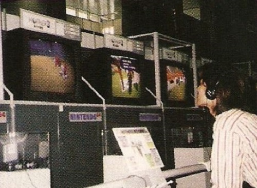
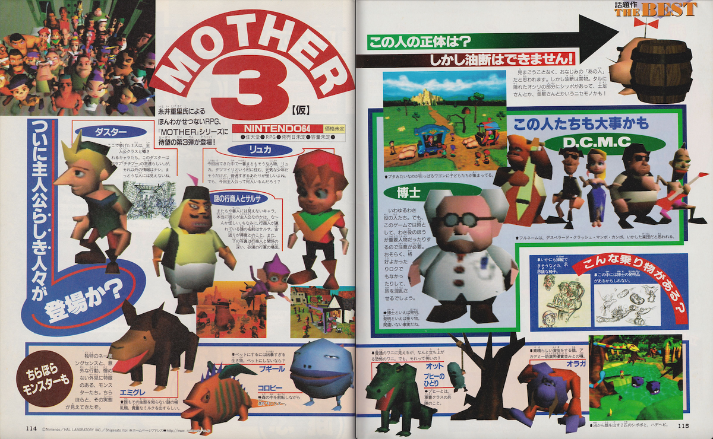
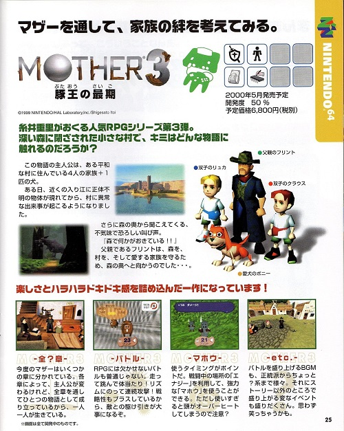

OVERVIEW
EarthBound 64, known in Japan as Mother 3, was an ambitious 3D role-playing game developed by HAL Laboratory and Brownie Brown under the direction of Shigesato Itoi.
The project aimed to bring the EarthBound series into fully 3D environments while maintaining the emotional storytelling and surreal humor that defined previous entries in the franchise.
Despite years of development and multiple public appearances, the game was officially cancelled in 2000.
Trailer video of Earthbound 64.

Boney cutscene
STORY
The story followed a young boy named Lucas as he traveled through the Nowhere Islands after a mysterious force began corrupting the world around him.
Throughout the adventure, players would encounter strange creatures, surreal environments, and emotionally driven events centered around family, loss, and change.
Early footage and promotional material suggested a darker and more emotional tone compared to previous EarthBound titles.
Many narrative elements from EarthBound 64 were later reused and reimagined in the Game Boy Advance version of Mother 3.
GAMEPLAY
EarthBound 64 was designed as a fully 3D role-playing game with explorable environments and turn-based combat.
Gameplay included:
- party-based exploration
- turn-based battles
- interactive towns and dungeons
- cinematic camera movement
- emotional story-driven progression
The project attempted to combine traditional RPG mechanics with a more cinematic presentation made possible by 3D hardware.
Prototype footage also revealed dynamic animations and large environments uncommon for Nintendo RPGs during the late 1990s.
Gameplay of Earthbound 64.

Marukatsu shonen
DEVELOPMENT
Development began during the Nintendo 64DD era before shifting to standard Nintendo 64 hardware after the failure of the 64DD peripheral.
The game remained in development for several years and was regularly shown at Nintendo events and in gaming magazines.
As development continued, technical limitations and production difficulties reportedly made the project increasingly difficult to complete.
The game became one of Nintendo’s most anticipated unreleased projects during the late 1990s.
CANCELLATION & LEGACY
EarthBound 64 was officially cancelled in 2000.
According to statements from the development team, the transition to 3D development proved more complicated and time-consuming than expected.
Shigesato Itoi later explained that continuing development had become emotionally and technically overwhelming for the team.
Although the Nintendo 64 version was cancelled, parts of the project were eventually reworked into Mother 3 for the Game Boy Advance.
Because of its long development history and emotional connection with fans, the project became a symbol of “lost” Nintendo history.
Prototype footage, screenshots, and magazine scans continue to be preserved and discussed by retro gaming communities today.

Mother 3 booklet.